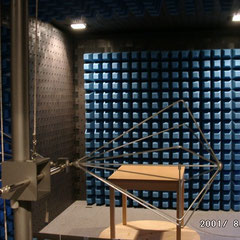
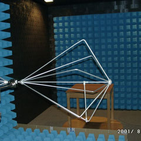
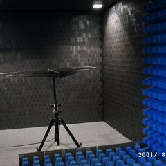
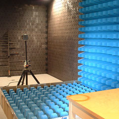

Messlabor




Aufgrund unserer langjährigen Erfahrung mit der kundenspezifischen Anpassung von Funkentstörbauteilen entstand aus unserem ursprünglich reinen Funkentstör-Labor in den letzten 10 Jahren ein modernes EMV-Labor. In diesem können alle für die Konformität mit der EG-EMV-Richtlinie erforderlichen Prüfungen durchgeführt werden. Unser Schwerpunkt ist vor allem die entwicklungsbegleitende Problemlösung, d. h. die EMV-Beratung vom Anfangsstadium der Entwicklung bis zum serienreifen Gerät und nicht nur die reine Routinemessung. Gerade durch unsere Erfahrung als Hersteller können wir oft eine, im Vergleich zu „Nur-Dienstleistern“, kostengünstigere Entstörung anbieten.
Folgende Prüfungen sind bei uns (oder auch bei Ihnen vor Ort) möglich:
Störaussendung (EN 61000-6-3 und -6-4, EN 55011, EN 55014-1, EN 55032,..):
Störspannung 9 kHz...30 MHz, Störleistung 30 MHz...300 MHz...1 GHz, elektrische Feldstärke 30 MHz...18 GHz, magnetische Feldstärke 9 kHz...30 MHz sowie niederfrequente Felder 5 Hz..30 kHz.
Störfestigkeit (EN 61000-6-1 und -6-2, EN 55014-2, EN 55035,..):
Elektrostatische Entladung (ESD) bis 15 kV, elektromagnetisches Feld bis 10 V/m, schnelle Transienten (Burst) bis 4.8 kV, energiereiche Einzelimpulse (Surges) bis 4.4 kV, Magnetfeld mit energietechnischer Frequenz bis 100 A/m, Netzeinbruch und Netzunterbruch.
Netzrückwirkungen (EN 61000-3-2 und -3-3):
Netzoberschwingungen und Netzspannungsschwankungen (Flicker) einphasig bis 16 A.
Eine detaillierte Übersicht finden Sie unter Dienstleistungen des EMV-Prüflabors.
Ansprechpartner
EMV-Labor-Leiter: Dipl.-Ing. (FH) Uwe Lorenzen
Laborassistent: Ralf Irion